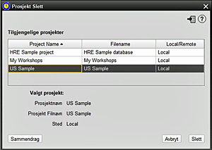

Dette skjermbildet lar brukeren slette et overskuddsprosjekt. Merk at prosjektet for øyeblikket ikke kan være åpent i HRE - det må lukkes først. 1. Velg prosjektet du vil slette. Prosjektnavnet, prosjektfilnavnet og plasseringen fylles deretter ut under valgdiagrammet 2. For å være sikker, kan det være lurt å sjekke prosjektoppsummeringen akkurat nå 3. Trykk på DELETE hvis du fortsetter 4. Behold databasen: Du blir bedt om om du vil beholde databasefilen (mens du sletter HRE Project-referansen), eller om du vil slette begge. Svar NEI for å slette alle, eller JA for å beholde databasefilen. |
|
Relaterte Temaer |